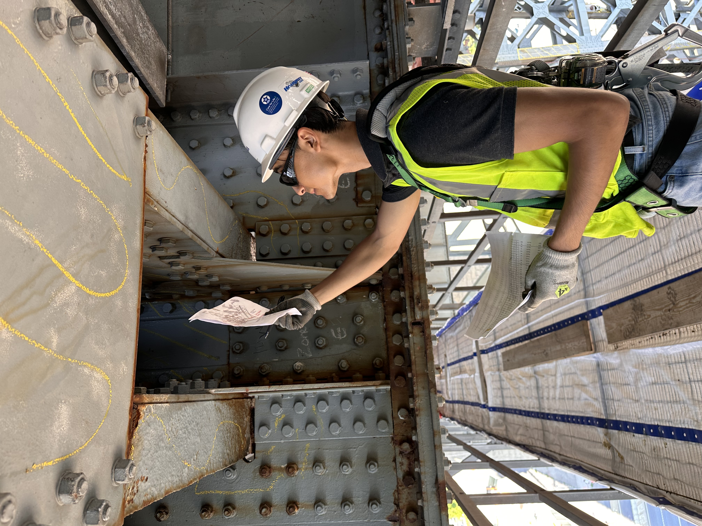
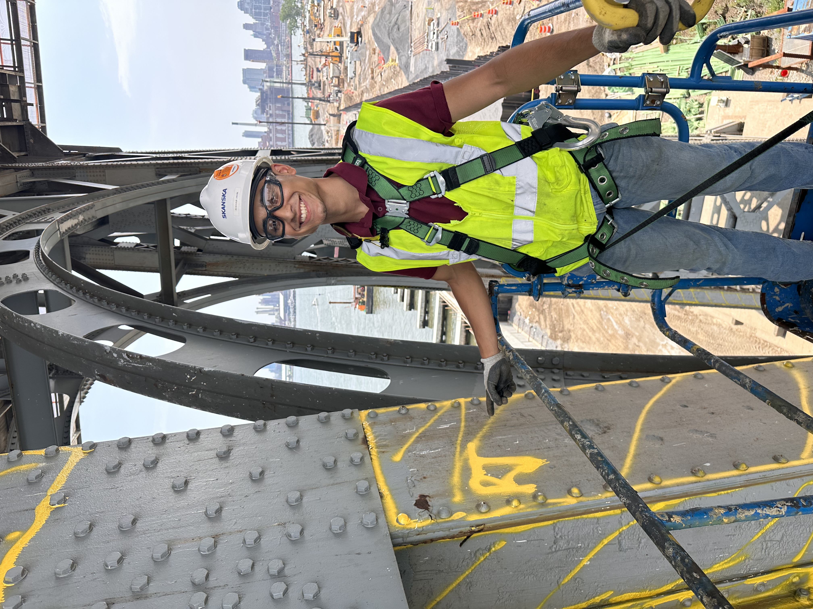
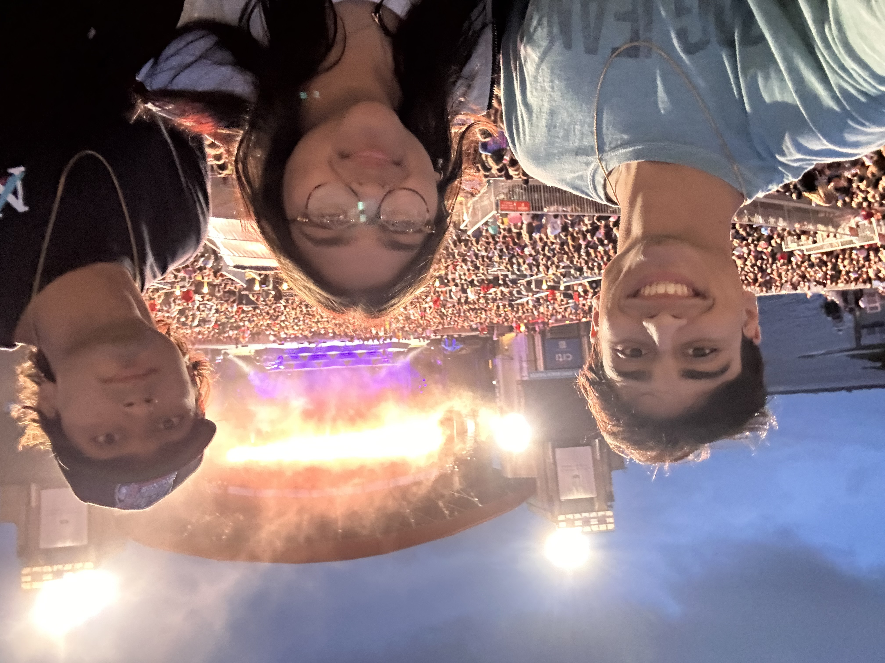
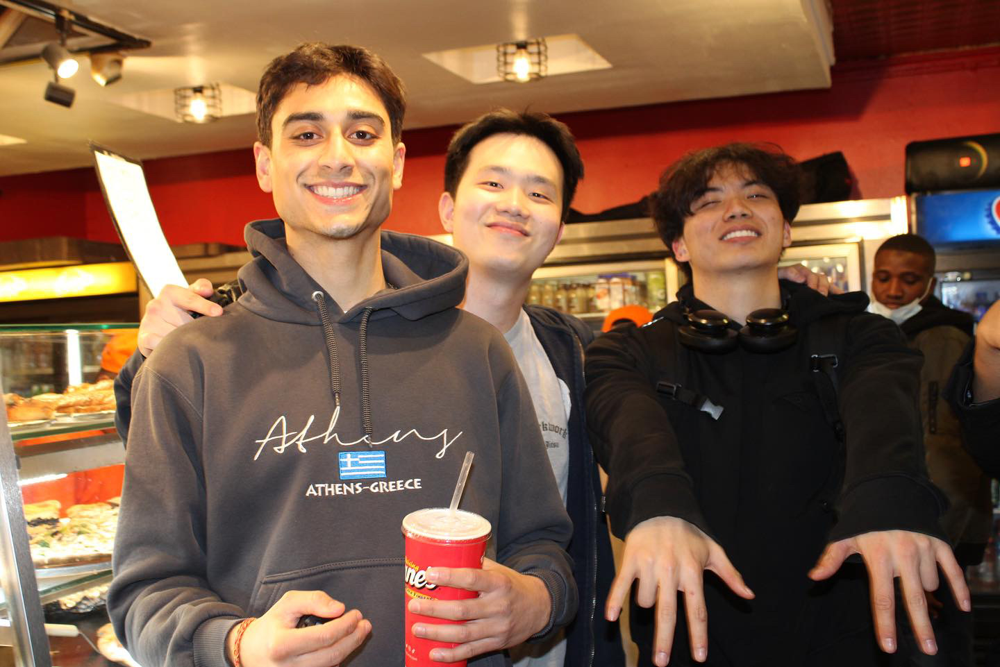
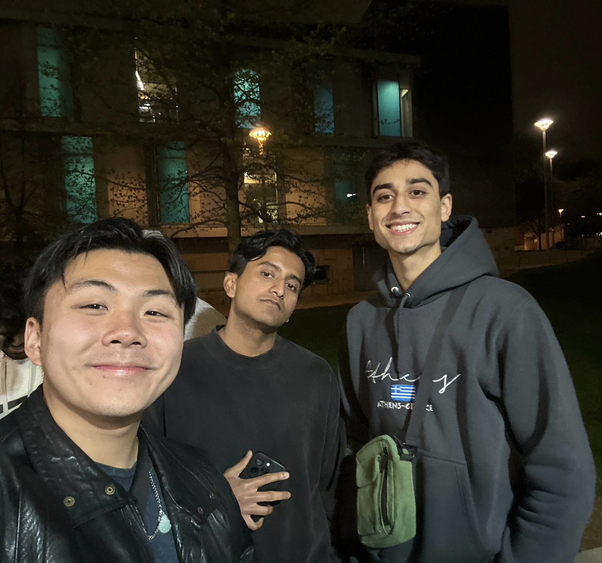
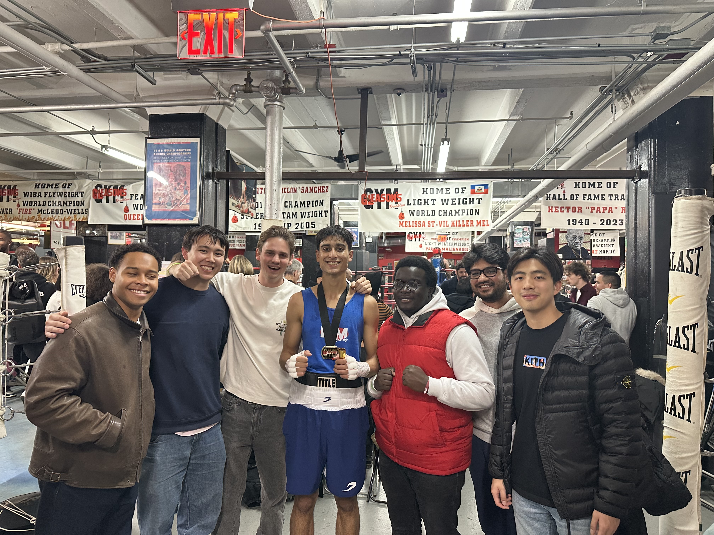
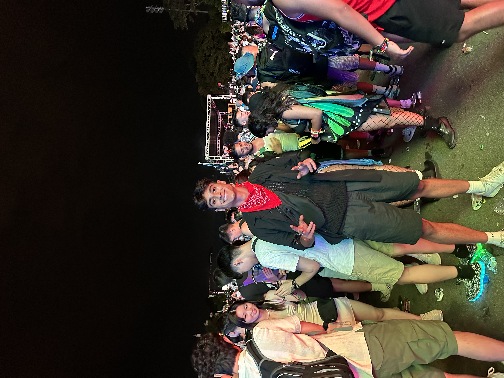

Welcome to My Website!
About Me
Hi, I'm Rishab Jain! I am a current ORIE (Operations Research and Information Engineering) student at Cornell Tech,
pursuing my passion in Data Science and Machine Learning. I come from a Civil Engineering background, where I worked
extensively with analytical problem-solving, physics, and statistics.
This webpage is a quick biography of my life, highlighting my career, friends, family, and hobbies. I hope you enjoy
getting a glimpse into my journey. Thanks for checking out my page!
Career
I have experience in project management within the infrastructure industry, where I worked on large-scale projects
involving scheduling, budgeting, and workforce management. Through my internships, I had the opportunity to contribute
to some amazing sites like the Queensboro Bridge and the Williamsburg Bridge, gaining hands-on experience in operations
and coordination.
My interest in the operations side of engineering led me to study ORIE at Cornell Tech, where I have worked with real-world datasets and helped make data-driven decisions for companies. While I have
a strong passion for integrating technology with engineering consulting, I am currently looking to gain experience in
Data Science and Machine Learning Engineering roles to continue developing my expertise in this field.


Family
I come from a family of six, including my amazing dog, Nova. Family has always been an important part of my life, and I would like to share it with you. Below I have attached a photo of my dog alongside a selfie
with my siblings at a Big Time Rush Concert.


Friends
I've added photos of my friends from all stages of life—elementary school, high school, undergrad, and now Cornell.
Each group has played a big role in shaping who I am, and I'm grateful for the lifelong connections I've made along the way.
I've also included my boxing team, a group of guys I've grown incredibly close with through training, sparring, and pushing
each other to be better every day. These guys have supported me through all my fights, and I couldn't have done it without them.
Outside of training and work, I love spending time with my friends, whether it's hitting the bars, raving at concerts, or just unwinding with some Xbox sessions. No matter the setting, these friendships bring a lot of fun and energy to my life.





